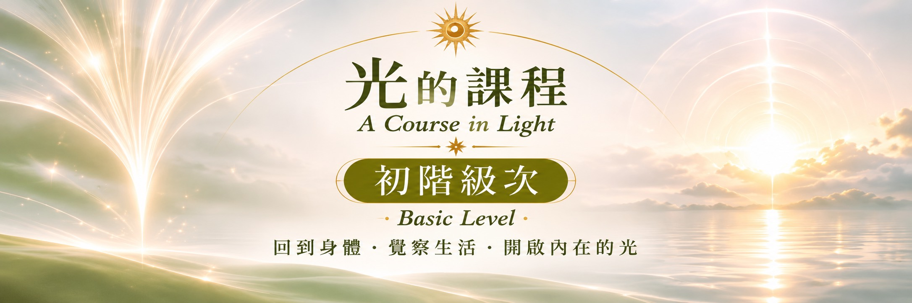

初階一 ｜ 身體
認識光・建立靜心的基礎
從身體與日常覺察開始，熟悉各色之光的靜心方式，為持續的內在探索建立穩定基礎。
認識十種色彩之光與基本靜坐次第
感受身體，培養規律的靜心習慣
透過書寫記錄生活與內在變化

光的課程，是一段透過不同色彩之光的靜心練習，逐漸認識自己、照見內在的學習旅程。從身體的感受開始，走向情緒、信念與意識的覺察，在每一次安靜下來的時刻，練習與自己重新連結。
在娜娜問路居，我們重視的不只是靜心時的體驗，更是如何把覺察帶回日常：在關係中理解自己的反應，在選擇中聽見真實的需要，在生活裡一步步活出光與愛。
「不必急著成為誰，先溫柔地回到自己。」
由身體、情緒、思想，逐步走向更深層的內在整合。每一個級次，都邀請你以自己的節奏，經驗光的練習。
認識光・建立靜心的基礎
從身體與日常覺察開始，熟悉各色之光的靜心方式，為持續的內在探索建立穩定基礎。
認識十種色彩之光與基本靜坐次第
感受身體，培養規律的靜心習慣
透過書寫記錄生活與內在變化
覺察情緒・理解內在反應
將練習深入情緒體與感受體，學習看見過往經驗如何影響現在的感受、關係與選擇。
• 探索情緒與感受的形成及表達
• 辨識熟悉的反應與內在模式
• 在靜心中練習接納、釋放與平衡
觀照思想・開展新的選擇
將注意力帶到思想與信念，理解慣性的判斷如何塑造生命經驗，練習以更清明的意識回應生活。
• 觀察限制自己的思考與信念
• 辨識重複出現的生活模式
• 讓理性、感受與內在意願更和諧
正式分類：中階預備・乙太星光體
承接前三個級次的練習，進一步探索更深層的意識與慣性模式，為下一階段的行星課程奠定基礎。
• 探索深層經驗與反覆出現的模式
• 延續自我觀察與內在整合
• 為行星級次的學習做好準備
光的課程，是讓我們在生活裡更清楚地看見自己。
當身體、情緒與思想逐漸被覺察，我們便有機會以更自由、更有愛的方式，回應眼前的每一刻。